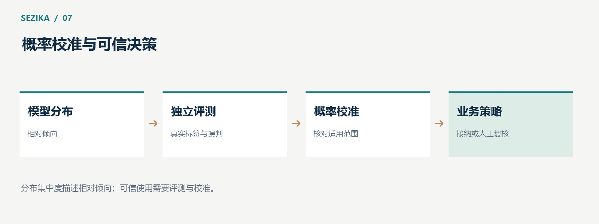

Sezika 的可信决策：概率、集中度、校准与拒答
Sezika 返回候选概率分布，让应用能够观察模型如何比较不同答案。要把这种输出用于真实业务，需要理解概率、分布集中度与实际正确率的区别，并为模糊判断和运行失败安排清楚的处理路径。

模型概率表达什么
候选概率描述模型在当前输入和候选范围内的相对倾向。分布经过归一化，便于比较候选，但数值很高并不自动意味着现实中同样高的正确率。
这是因为模型可能遇到陌生领域、含糊输入或缺少关键事实的问题。候选集合本身也可能没有正确答案。此时模型仍可能偏向其中某个选项。
例如，应用只提供“账单问题”和“技术故障”，输入却是一条广告。分布可能看起来集中，但强制二选一无法解决候选范围不合适的问题。
集中度描述分布形状
Sezika 使用 distribution concentration 描述概率分布的集中程度。对于 K 个候选，其定义是：
concentration = 1 − H(p) / log(K)
H(p) 表示分布熵。分布越均匀，集中度越低；越接近把全部概率放在一个候选上，集中度越高。该表达适用于具有有效多候选分布的情况。
集中度可以帮助观察模型是否明显偏向一个答案，但它没有测量答案与真实标签是否一致。一个错误答案也可以拥有很集中的分布。
因此，不能把集中度直接改名为“正确概率”，也不能仅凭高集中度就执行敏感业务动作。

校准把概率与实际表现联系起来
概率校准需要使用与目标任务相关、经过隔离的数据，检查概率表达与实际正确情况是否相符。常见的温度缩放会调整分布的锐利程度，但不会凭空补齐模型缺失的知识。
校准还具有适用范围。某个模型在客服意图数据上的校准结果，不能自然覆盖设备故障诊断。模型权重、tokenizer、输入协议或任务范围发生变化，都需要检查原校准是否仍然有效。
Sezika 当前独立模型输出仍标记为未校准。这是对数值含义的明确说明，应用可以用这些输出开展评测，但不应把它们直接当成经过验证的真实正确率。
拒答是业务策略的一部分
对某些输入，应用可以保留模型分布，同时决定进入人工复核。这样的拒答或暂缓处理，表达的是“当前条件下不接受自动判断”。
阈值应来自对应任务的验证结果，并考虑误判代价。把同一个阈值同时用于客服分派、资金操作和设备控制，通常缺少合理依据。
当前独立 decision-v1 路径尚未提供已经完成质量验收的校准拒答策略。应用需要在经过评测后设计自己的接纳与复核规则，不能假设一个参数已经解决未知输入判断。
拒答与运行失败应分别处理
如果模型成功计算出分布，应用可以依据策略选择接受或复核。如果输入格式错误、模型资产缺失、设备故障、超时或取消，程序没有产生可用的模型判断，这属于执行错误。
把两者混在一起，会让调用方误以为模型只是“没把握”，实际却可能是加载失败或输入不完整。清楚的错误码和状态能够帮助应用采取正确行动：补全输入、重试受控请求、检查资产，或转入人工处理。
从真实误判代价设计流程
对客服分派，误判可能导致多一次转交；对退款或设备控制，误判可能造成实质损失。业务流程应根据风险决定自动化范围，并独立检查身份、权限与事实条件。
一个稳妥的试点，可以先让模型提供建议，由人工作出最终处理，再记录接受率、错误类型和复核情况。评测与观察有了稳定依据后，才逐步扩大可自动处理的范围。
Sezika 提供结构化判断与可观察的分布。可信使用还需要真实标签、独立校准、明确的失败语义和业务授权共同支撑。
概率与接口说明见 Sezika 项目文档。